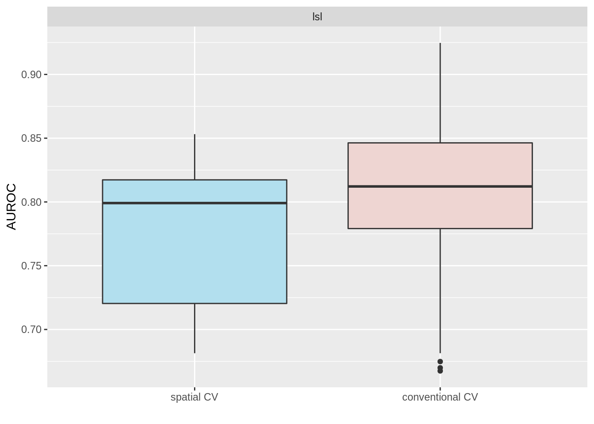
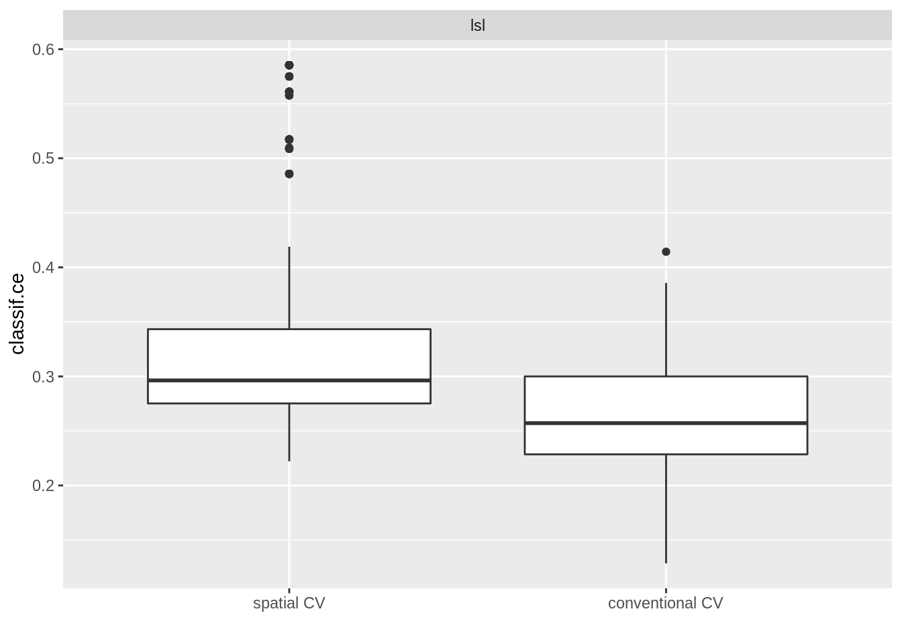

# from pca-mlr3-pipelines
library(mlr3verse)
library(data.table)
library(future)
library(igraph)
library(ggfortify)
library(scattermore)
library(R6)
library(rlang)
# from Statistical Learning | Geocomputation with R
library(lgr)
library(sf)
library(terra)
library(progressr)
library(mlr3spatiotempcv)
library(spDataLarge)
library(tmap)
library(tmaptools)
library(raster)
library(pROC)
library(tictoc)
library(ggplot2)mlr3verse_info()## package version
## 1: bbotk 0.5.1
## 2: mlr3cluster 0.1.2
## 3: mlr3data 0.6.0
## 4: mlr3filters 0.5.0
## 5: mlr3fselect 0.6.1
## 6: mlr3hyperband 0.4.0
## 7: mlr3learners 0.5.2
## 8: mlr3misc 0.10.0
## 9: mlr3pipelines 0.4.0
## 10: mlr3proba 0.4.4
## 11: mlr3tuning 0.12.1
## 12: mlr3tuningspaces 0.1.1
## 13: mlr3viz 0.5.7
## 14: paradox 0.8.0data("lsl", "study_mask", package = "spDataLarge")
lsl <- as.data.table(lsl)
ta <- terra::rast(system.file("raster/ta.tif", package = "spDataLarge"))lsl_sf <- st_as_sf(lsl, coords = c("x", "y"), crs = "EPSG:32717")
# generates errors
slope1 <- ta$slope * pi / 180
aspect <- terra::terrain(ta$elev, v = "aspect", unit = "radians")
hs <- terra::shade(slope = slope1, aspect = aspect)
# so far tmaptools does not support terra objects
bbx <- tmaptools::bb(
raster::raster(hs), xlim = c(-0.0001, 1),
ylim = c(-0.0001, 1), relative = TRUE
)
map <- tm_shape(hs, bbox = bbx) +
tm_grid(
col = "black", n.x = 1, n.y = 1, labels.inside.frame = FALSE,
labels.rot = c(0, 90), lines = FALSE
) +
tm_raster(palette = gray(0:100 / 100), n = 100, legend.show = FALSE) +
tm_shape(ta$elev) +
tm_raster(alpha = 0.5, palette = terrain.colors(10), legend.show = FALSE) +
tm_shape(lsl_sf) +
tm_bubbles(
"lslpts", size = 0.2, palette = "-RdYlBu", title.col = "Landslide: "
) +
tm_layout(inner.margins = 0) +
tm_legend(bg.color = "white")print(lsl)## x y lslpts slope cplan cprof elev log10_carea
## 1: 713887.7 9558537 FALSE 33.75185 0.023180449 0.003193061 2422.810 2.784319
## 2: 712787.7 9558917 FALSE 39.40821 -0.038638908 -0.017187813 2051.771 4.146013
## 3: 713407.7 9560307 FALSE 37.45409 -0.013329108 0.009671087 1957.832 3.643556
## 4: 714887.7 9560237 FALSE 31.49607 0.040931452 0.005888638 1968.621 2.268703
## 5: 715247.7 9557117 FALSE 44.07456 0.009686948 0.005149810 3007.774 3.003426
## ---
## 346: 714877.2 9558362 TRUE 49.16936 -0.079123855 -0.004267062 2577.096 3.242106
## 347: 714909.5 9558581 TRUE 39.75526 -0.022253942 0.010101856 2441.529 3.037662
## 348: 713713.6 9558849 TRUE 41.92702 -0.026429312 0.001791014 2375.455 2.859420
## 349: 715253.2 9558797 TRUE 38.98206 -0.035161112 0.002966748 2442.470 2.735578
## 350: 713825.6 9559078 TRUE 35.21368 0.020333998 -0.003390223 2377.151 3.203316fit <- glm(
lslpts ~ slope + cplan + cprof + elev + log10_carea,
family = binomial(),
data = lsl
)
pred <- terra::predict(ta, model = fit, type = "response")# throws error
sv_study_mask <- terra::vect(study_mask)
map <- tm_shape(hs, bbox = bbx) +
tm_grid(
col = "black", n.x = 1, n.y = 1, labels.inside.frame = FALSE,
labels.rot = c(0, 90), lines = FALSE
) +
tm_raster(palette = "white", legend.show = FALSE) +
# hillshade
tm_shape(terra::mask(hs, sv_study_mask), bbox = bbx) +
tm_raster(palette = gray(0:100 / 100), n = 100, legend.show = FALSE) +
# prediction raster
tm_shape(terra::mask(pred, sv_study_mask)) +
tm_raster(
alpha = 0.5, palette = "Reds", n = 6, legend.show = TRUE, title = "Susceptibility"
) +
tm_layout(
legend.position = c("left", "bottom"), legend.title.size = 0.9, inner.margins = 0
)pROC::auc(pROC::roc(lsl$lslpts, fitted(fit)))## Area under the curve: 0.8216Here we introduce spatial cross validation to combat spatial autocorrelation and bias. We’ll use the mlr3 framework to build our model.
Specifically, we’ll run 4 models using an mlr3 ‘design’. A design is a table of scenarios (models to be evaluated) of unique combinations of Task, Learner, and Resampling objects.
We create the design using benchmar_grid and can run the design object using benchmark.
We will parallelize the execution of our models as much as possible. This depends on the number of cores that are available on our machine and by how we instruct futures to be resolved by specifying the future topology via future::plan. An optimal approach can also depend on types of resampling methods used by each of our models (e.g. nested resampling can be executing in parallel in the inner resampling loop), as well as the dimensions of our design.
Note, both TaskClassifST$new & as_task_classif_st can accept sf objects, e.g. our lsl_sf object. When this is the case, spatial metadata can be extracted and used for input arguments to the task (e.g. coordinate_names & crs in the extra_args list).
However, apparently the task converts the sf object into a data.table object, which we know could become memory intensive when handling large data.
By default, all variables other than the target parameter & the coordinate_names within the backend/x object are used as predictor variables. By default coords_as_features is set to FALSE, which instructs the task to not use coordinate_names as predictors. Set this to TRUE to use them as predictors.
task_new <- mlr3spatiotempcv::TaskClassifST$new(
id = "lsl",
backend = mlr3::as_data_backend(lsl),
target = "lslpts",
positive = "TRUE",
extra_args = list(
coordinate_names = c("x", "y"),
coords_as_features = FALSE,
crs = "EPSG:32717"
)
)
task_new## <TaskClassifST:lsl> (350 x 6)
## * Target: lslpts
## * Properties: twoclass
## * Features (5):
## - dbl (5): cplan, cprof, elev, log10_carea, slope
## * Coordinates:
## x y
## 1: 713887.7 9558537
## 2: 712787.7 9558917
## 3: 713407.7 9560307
## 4: 714887.7 9560237
## 5: 715247.7 9557117
## ---
## 346: 714877.2 9558362
## 347: 714909.5 9558581
## 348: 713713.6 9558849
## 349: 715253.2 9558797
## 350: 713825.6 9559078task <- as_task_classif_st(
x = lsl,
target = "lslpts",
positive = "TRUE",
coordinate_names = c("x", "y"),
coords_as_features = FALSE,
crs = "EPSG:32717"
)
task## <TaskClassifST:lsl> (350 x 6)
## * Target: lslpts
## * Properties: twoclass
## * Features (5):
## - dbl (5): cplan, cprof, elev, log10_carea, slope
## * Coordinates:
## x y
## 1: 713887.7 9558537
## 2: 712787.7 9558917
## 3: 713407.7 9560307
## 4: 714887.7 9560237
## 5: 715247.7 9557117
## ---
## 346: 714877.2 9558362
## 347: 714909.5 9558581
## 348: 713713.6 9558849
## 349: 715253.2 9558797
## 350: 713825.6 9559078Creating the tasks via the above methods seem to make them identical, but that’s not strictly the case.
identical(task_new, task)## [1] FALSEWe’ll use a logistic regression learner for this task since the response variable of lsl$lslpts is binary.
as.data.table(mlr_learners) %>% `[`(key == "classif.log_reg")## key label task_type feature_types packages properties predict_types
## 1: classif.log_reg <NA> classif logical,integer,numeric,character,factor,ordered mlr3,mlr3learners,stats loglik,twoclass,weights response,problearner = lrn("classif.log_reg", predict_type = "prob")resamplings = list(
rsmp("repeated_spcv_coords", folds = 5, repeats = 100),
rsmp("repeated_cv", folds = 5, repeats = 100)
)design = benchmark_grid(
tasks = task,
learners = learner,
resamplings = resamplings
)
design## task learner resampling
## 1: <TaskClassifST[51]> <LearnerClassifLogReg[37]> <ResamplingRepeatedSpCVCoords[22]>
## 2: <TaskClassifST[51]> <LearnerClassifLogReg[37]> <ResamplingRepeatedCV[22]>Set seed for reproducibility
set.seed(1)
plan(multisession)lgr::get_logger("mlr3")$set_threshold("warn")
tic()
progressr::with_progress(
bmr <- benchmark(
design = design,
store_models = TRUE,
store_backends = FALSE,
encapsulate = "evaluate"
)
)## Warning: The fallback learner 'response' and the base learner 'prob' have different predict typestoc()## 32.512 sec elapsedp_auroc <- autoplot(bmr, measure = msr("classif.auc"))
p_auroc$labels$y = "AUROC"
p_auroc$layers[[1]]$aes_params$fill = c("lightblue2", "mistyrose2")
p_auroc + scale_x_discrete(labels=c("spatial CV", "conventional CV"))
autoplot(bmr) + scale_x_discrete(labels=c("spatial CV", "conventional CV"))